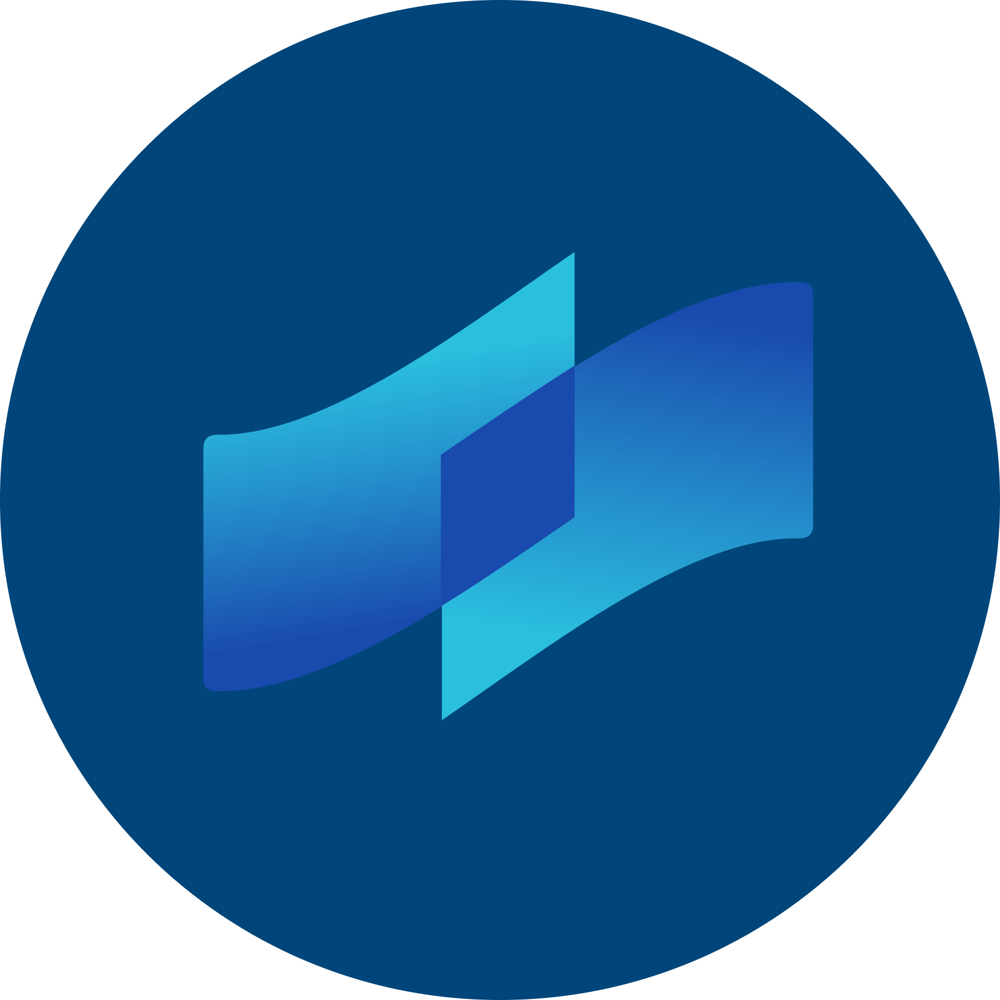
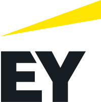
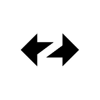

State of Privacy on Ethereum for Enterprise
Mapping Financial Institution Requirements to Ethereum Solutions — An Ecosystem Overview, Version 1
Opening Statement
This report represents a collective effort by the Enterprise Ethereum Alliance (EEA) Privacy Working Group to map the current landscape of privacy within the Ethereum ecosystem. This work reflects the contributions of 17 experts across 11 organizations—Applied Blockchain, Consensys, COTI, EY, Kaleido, Polygon, ZKsync/Matter Labs, the Ethereum Foundation, L2Beat, Nethermind, and the Enterprise Ethereum Alliance—over a dedicated three-month intensive study period.
From its inception, this report has been guided by neutrality as a core design principle. Our methodology relied on cross-institutional validation, synthesizing technical documentation, stress-testing results, and deployment post-mortems from leading financial and cryptographic institutions. Our aim is to provide an objective, technical, and strategic framework for understanding how privacy is being integrated into enterprise-grade blockchain solutions.
The scope of this report is intentionally focused on the privacy solutions developed and maintained by EEA member organizations. By concentrating on the innovations within our ecosystem, we can ensure that solution characteristics are supported by live pilots, peer-reviewed empirical papers, or enterprise deployments. While we recognize the broader ecosystem of privacy research, deep-dives into non-member solutions fall outside the primary scope of this mandate. However, in the interest of authenticity and inclusivity, a comprehensive taxonomy of non-member solutions and academic primitives can be found in the 'Additional Privacy Solutions' section at the conclusion of this paper.
Executive Summary
The Challenge
Financial institutions are increasingly deploying tokenized assets on Ethereum, but public blockchains expose all transaction data by default—amounts, counterparties, and business relationships are visible to anyone monitoring the network. This transparency creates a critical barrier: enterprises cannot move trillion-dollar bond markets, derivatives positions, or proprietary trading strategies onto infrastructure where competitors and adversaries can observe every move.
Privacy and confidentiality are not features—they are prerequisites for enterprise adoption.
What This Report Provides
The Enterprise Ethereum Alliance convened a Privacy Working Group of 17 experts across 11 organizations to map the current landscape. Seven EEA member organizations contributed their solutions, creating the first comprehensive enterprise-focused view of privacy capabilities on Ethereum:
- COTI — Garbled Circuits for programmable privacy
- Linea Enterprise (Consensys) — Private Validium with ZK proofs
- Nightfall (EY) — Open-source ZK protocol for confidential tokens
- Paladin (Kaleido, LFDT) — Modular privacy framework supporting multiple cryptographic approaches
- Prividium (ZKsync/Matter Labs) — Permissioned ZK Layer 2 with institutional controls
- Polygon CDK — Configurable privacy spectrum for sovereign chains
- Silent Data (Applied Blockchain) — TEE-based programmable privacy on OP Stack
Key Findings
Privacy has multiple dimensions—transaction amounts, counterparty identities, business logic, and regulatory access all require different technical approaches. No single solution covers all requirements. Different solutions protect different aspects of operations using distinct trust models: cryptographic proofs (ZK), secure hardware (TEEs), multi-party computation (MPC), or organizational controls.
Who Should Read This
This paper is designed for CIOs, compliance officers, and digital asset leads who need to evaluate privacy options for tokenized asset deployments. It provides a practical framework to understand what exists, how each approach works, what trust assumptions apply, and what implementation requires—enabling institutions to make informed decisions for their specific regulatory and operational needs.
Bottom Line
The enterprise privacy landscape on Ethereum is maturing rapidly, with production deployments already supporting central bank digital currencies, tokenized funds, and private trading platforms. This report maps the territory so institutions can navigate from experimentation to implementation.
Research Methodology
Before examining the solutions themselves, it's essential to understand how this assessment was conducted. The following methodology ensures transparency in how we evaluated each privacy solution and determined readiness classifications.
The findings within this paper were developed within the EEA Privacy Working Group over a dedicated three-month intensive study period. The methodology relied on a synthesis of technical documentation, stress-testing results, and deployment post-mortems from the world's leading financial and cryptographic institutions.
The working group was led by a steering committee comprising:
Our process involved cross-review of privacy primitives, and the consolidation of proprietary enterprise requirements into a unified set of standards for Ethereum-based privacy.
Scope and Approach: This is Version 1 of a recurring report series. It is an ecosystem mapping and overview — not independent testing, benchmarking, or vendor validation. Assessments are based on publicly available information, including provider documentation, case study announcements, and verifiable deployment references. Solution profiles reflect provider-stated capabilities.
Enterprise Privacy Problem: The Barriers to Public Blockchain
With the methodology established, we now turn to why privacy matters in the first place. Understanding the specific barriers that prevent enterprise adoption is critical to evaluating which solutions address real business needs.
For enterprises, the transparency that defines public blockchains is a "double-edged sword." While it provides immutable trust, it simultaneously creates a critical confidentiality deficit. The primary issues include:
Exposure of Business Logic
On a public ledger, smart contract interactions can reveal sensitive business logic, trade secrets, and proprietary algorithms to competitors.
Lack of Financial Discretion
Publicly visible transaction amounts and wallet balances are incompatible with corporate treasury requirements and high-stakes financial maneuvers.
Regulatory Non-Compliance
Regulations such as GDPR and MiCA require strict controls over data access and the "right to be forgotten," which are fundamentally at odds with a permanent, public, transparent ledger.
Impact on Financial Strategy
Visibility into transaction flows allows for front-running and "MEV" (Maximal Extractable Value) exploitation, which erodes the profitability of institutional trading strategies and introduces unacceptable threat actors.
Institutional Trust Requirements
Institutions require an infallible level of trust in their financial products and instruments. The option for confidentiality is a requisite to preserve this trust in the process of tokenized assets. Without robust privacy, the public blockchain remains a "read-only" experiment for the world's largest enterprises.
Privacy Addressable Market
Having identified the barriers, it's important to quantify the opportunity. The following sectors represent the economic scale that privacy-preserving technology can unlock on Ethereum.
The transition of institutional assets to the blockchain represents a multi-trillion-dollar opportunity. Privacy is not just a feature, it is the key that unlocks these sectors:
Global Finance (TradFi)
The total addressable market for private decentralized finance (DeFi) includes the $100T+ global bond market and the $600T derivatives market, both of which require strict transaction privacy.
Supply Chain & Logistics
Protecting the identity of suppliers and the pricing of raw materials is essential for maintaining competitive advantages in global trade.
Healthcare & Data Sovereignty
The secure, private exchange of patient records and genomic data requires a "Privacy-First" architecture to meet global compliance standards.
Taxonomy of Privacy Approaches in the Ethereum Ecosystem
Before evaluating specific solutions, readers need a common vocabulary. This taxonomy provides the technical building blocks that power enterprise privacy on Ethereum, creating a foundation for understanding how each solution works.
The Technical Primitives
An emerging field that allows data to remain encrypted even while it is being processed, ensuring that sensitive information is never "unlocked" during computation.
Distributes computation across decentralized software, enabling any one individual or multiple parties to collectively compute over data while it remains encrypted; this ensures that sensitive information is never "decrypted".
Distributes a computation across multiple parties such that no single party can see the entire data set, preventing any single point of failure or data leak.
Uses a hardware-secured "enclave" within a processor to run computations in complete isolation, ensuring that sensitive data cannot be accessed or tampered with — even by the host system or platform operator.
A way for one party to prove to another that a statement is true without revealing any information beyond the validity of the statement itself (e.g., "I have enough funds," without showing the balance).
A closed group of participants executing a shared business logic and maintaining a privately replicated ledger, while maintaining a state transition history on the public ledger with commitments to enforce consistency among the private ledgers.
Privacy-Related Ethereum Standards
ERC-5564 (Stealth Addresses): Enables senders to generate private addresses for recipients without prior interaction. Recipients use viewing keys to identify incoming transfers without revealing their identity to observers.
ERC-6538 (Stealth Meta-Address Registry): Provides a registry for stealth meta-addresses, enabling senders to discover recipients and generate stealth addresses without prior direct interaction. Complements ERC-5564.
ERC-7984 (Confidential Fungible Token) [Draft]: Defines an interface for tokens with confidential balances and transfer amounts. Technology-agnostic, supporting FHE, ZK proofs, TEEs, or other privacy mechanisms.
The Ethereum Foundation's Privacy Roadmap
While member solutions address immediate enterprise needs, the Ethereum base protocol is also evolving. Understanding where the Ethereum Foundation is heading with privacy infrastructure helps contextualize these enterprise solutions within the broader roadmap.
The Ethereum Foundation has outlined a comprehensive privacy roadmap across three distinct tracks:
Private Proving
Enabling users to prove facts about themselves without revealing underlying data.
Private Writes
Enabling confidential actions on Ethereum mainnet. Developing infrastructure for private transfers, precompiles, reference implementations, tooling on SDK integrations for privacy-first wallets including private account recovery.
Private Reads
Tackles metadata leakage from reading state. Developing Private Information Retrieval (PIR). Target: major RPC providers, wallets, and block explorers offer privacy alternatives within 12 months.
Trust Models of Enterprise Privacy Solutions
Privacy technologies rely on different security assumptions. Before selecting a solution, enterprises must understand who or what they are trusting, under what conditions that trust can fail, and how those risks align with their regulatory and operational requirements.
Cryptographic Trust
Trust placed in publicly verifiable cryptography, not any single operator. ZK proofs are mathematically verifiable by anyone. MPC & GC rely on protocol design and cryptographic primitives.
- Circuit bugs
- Missing constraints
- Malicious inputs
- Incremental leakage
Hardware-Anchored Trust
Trust placed in hardware security guarantees by manufacturers. Relies on secure enclaves and remote attestation to verify execution environment integrity.
- Attestation compromise
- Leaked encryption keys
- Side-channel attacks
Organizational Honesty
Trust placed in honesty of organizations operating core components. FHE requires majority of co-processor operators to be honest. MPC requires at least one honest party.
- Collusion above trust threshold
- Full data reconstruction if compromised
Readiness Matrix with Evidence
With the foundational concepts established, this matrix provides a practical comparison of each solution's production readiness. The following assessment is evidence-based: only solutions with publicly verifiable deployments are classified as "In Production."
The following assessment classifies each solution by its production readiness, backed by verifiable public evidence. Classifications reflect the current state as of April 2026.
| Solution | Technology | Status | Production Evidence | Links |
|---|---|---|---|---|
| COTI | FHE + Garbled Circuits | ✅ In Production | Privex live on mainnet (June 2025); StaTwig VaccineLedger deployed in Bangladesh & Costa Rica | Mainnet Explorer Docs Privex Announcement StaTwig Partnership |
| Prividium (ZKsync) | Zero-Knowledge Proofs | ✅ In Production | Deutsche Bank Project Dama 2 — live institutional L2 for asset tokenization (MAS Singapore) | Product Page Deutsche Bank Litepaper |
| Silent Data (Applied Blockchain) | TEE | ✅ In Production | Archax tokenised funds (Aberdeen, BlackRock, Fidelity, State Street) live Feb 2026; CRYOPDP/DHL — SAP Award winner Dec 2025; Bank of England Digital Pound Lab Phase 1 | Archax Funds CRYOPDP Case Study BoE Digital Pound Lab Demo Video |
| Paladin (Kaleido / LFDT) | Privacy Groups (ZK/Notary) | ✅ In Production | Bank of Indonesia Digital Rupiah (Project Garuda) — PoC report published by central bank | Kaleido Blog BI Official Report (PDF) HKMA eHKD & Bank of Brazil Drex — references available on request |
| Nightfall (EY) | Zero-Knowledge Proofs | ⚠️ Early Access | Nightfall_4 open source (April 2025); integrated into EY OpsChain. No named production customer publicly disclosed | GitHub EY Blockchain Nightfall_4 Press Release |
| Polygon CDK | Zero-Knowledge Proofs | ⚠️ Available (Infra) | CDK toolkit available for building privacy-enabled L2 chains. No named enterprise privacy deployment publicly linked | CDK Docs |
| Linea Enterprise (Consensys) | ZK-Proofs + TEE | 🔄 Pilot | Enterprise pilot program; SWIFT collaboration on private testnet | Consensys |
Methodology: Status classifications follow the principle: No public evidence, no production claim. Solutions without verifiable public deployment references are classified accordingly. Private references verified by the EEA are noted where applicable.
Solution Profiles
The matrix provides a high-level overview, but enterprise decision-makers need deeper technical detail. This section offers comprehensive profiles for each solution, including privacy approaches, integration requirements, case studies, and provider-stated characteristics.
Click on each solution to expand and view detailed information.

COTI
Summary
COTI is the programmable privacy layer for Web3. Powered by high-performance Garbled Circuits, it delivers fast, low-cost, flexible, and compliant privacy across blockchains, and natively on its Ethereum Layer 2. COTI's architecture enables enterprises and developers to build privacy-preserving applications with end-to-end confidentiality and cost-efficiency at scale. It unlocks a wide variety of use cases in private DeFi, tokenized real-world assets (RWAs), trading, payments, and decentralized identity. COTI leads in private DeFi and enterprise adoption, with active collaborations in banking, government, and global forums.
Privacy Approach
COTI uses Garbled Circuits (GC), an advanced multi-party computation (MPC) technique, to enable encrypted computation within workflows. Sensitive data including inputs, balances, on-chain state, and smart contract logic, remains encrypted end-to-end across storage, computation and transmission. "Input Text" is converted into "Garbled Text", where encrypted Boolean gates are securely evaluated, supporting complex operations over private data without exposing data. Garbled Circuits deliver strong confidentiality with high throughput, low latency, low cost, EVM compatibility, and multi-chain support. Programmable smart contracts allow selective disclosure for audits, compliance, or permissions, keeping data private yet revealable to authorized parties via permissioned view-keys.
Integration Requirements
- Deploy on COTI network or bridge existing assets
- Standard Solidity with parameters specifying confidential data elements
- TypeScript, Python, Hardhat tooling available
Case Studies
- Central Bank of Europe - Digital Euro: Pioneer Partner with the European Central Bank to establish confidential consumer applications on top of a Euro CBDC settlement layer.
- Privex: A COTI native privacy-preserving perpetual exchange that processes in excess of $25bn in aggregate volume and extends both confidential user and agentic trading.
- Unicef, Bangladesh Government, StaTwig: Integrated COTI for a national-scale rollout in Bangladesh, completing 10 million private computations on encrypted IoT-enabled vaccine data for approximately 7 USD total.
Solution Characteristics (as stated by provider)
- Extends confidential tokens, concealing transaction values and account balances
- Real-time, scalable, confidential computations; private transactions at $0.0000007
- Multi-party: Extends to scenarios where multiple parties need to contribute private data
- Performative: 1000x faster & 250x lighter than alternative privacy solutions (FHE)
- Roadmap: Multichain expansion, extending a privacy-on-demand capability that can be used on 70+ chains (planned 2026)
- Maturity: Production ready
GitHub Libraries & Developer Documentation
Linea Enterprise
Summary
An Ethereum Layer 2 solution that can be deployed as a private, permissioned "Validium" where the state remains private. Zero knowledge proofs are used to prove the validity of the state while keeping transaction data confidential as well as to enable trustless interoperability with Ethereum. This guarantees full access to the Ethereum ecosystem including its liquidity while providing institutional privacy.
Privacy Approach
Uses a Private Validium architecture combined with an Access Control Engine. Transaction data and ledger state stay within the operator-controlled infrastructure and are never published externally. Only zero-knowledge validity proofs (ZKPs) and commitments to these data are posted to Ethereum to prove correctness. Role-Based Access Control (RBAC) restricts data visibility so that participants (auditors, banks) only see the specific transaction data they are entitled to view.
Integration Requirements
- Existing Smart Contracts: Full EVM equivalence allows existing Ethereum smart contracts to deploy without modification.
- Tokens: Native support for all ERC standards (ERC-20, ERC-721, ERC-1155, ERC-3643).
- Tooling: Compatible with standard Ethereum developer tools (Hardhat, Foundry).
- Identity: Users/Institutions can integrate with the Linea Enterprise Gateway (e.g., via standards like OAuth2, wallet signing).
Case Studies
- SWIFT September 2025 pilot: 12+ banks including BNP Paribas, BNY Mellon
- SharpLink Gaming: $170M ETH with Anchorage Digital custody
- Total value secure on Linea Mainnet public chain: $750M+ per public sources
Solution Characteristics (as stated by provider)
- Throughput: benchmarks with ~1000 TPS for simple transfers, and a roadmap to 30,000+ TPS.
- Finality: instant/single-slot finality on Layer 2; L1 finality depends on proof posting frequency.
- Cost: sub-$0.01 per transaction.
- Maturity: production ready, the core stack has been running Linea mainnet for two years.
GitHub Libraries & Developer Documentation

Nightfall
Summary
Nightfall_4 is an open-source zero-knowledge-based privacy protocol developed and maintained by EY that enables confidential token transfers on Ethereum-compatible networks. It uses cryptographic commitments and zero-knowledge validity proofs to ensure transaction correctness while keeping amounts and counterparties private. The protocol is designed for enterprise and institutional use cases, supporting selective disclosure for compliance and audit without introducing global decryption keys or protocol backdoors. Identity, permissioning, and KYC integration are deployment-configurable rather than hard-coded. Nightfall_4 focuses on practical privacy for regulated environments, balancing confidentiality, auditability, and interoperability with public blockchain infrastructure.
Privacy Approach
Converts tokens (ERC-20, ERC-721, ERC-1155, ERC-3525) into cryptographic 'commitments' using ZK-ZK rollup architecture. Validity proofs verify correctness without revealing amounts, parties, or transfer details.
Integration Requirements
- Tokens deposit to receive private commitments
- Supports decentralized permissioning and KYC-gating
- X.509 enterprise identity certificates supported for deposit/withdrawal
- Gas fee abstraction available for ERC-20 tokens
Case Studies
- Starknet Ecosystem: Integration to enable high-throughput privacy-preserving payments leveraging zk-based scalability infrastructure.
- Plume Network: Layer-3 deployment for privacy-enabled institutional RWA tokenization with sequencer-level AML compliance.
- Celo Foundation: First payments-focused blockchain to deploy Nightfall; targeting enterprise B2B cross-border payment ($180T market)
- Microsoft: Supply chain proof-of-concept
Solution Characteristics (as stated by provider)
- Cost: 3.5x cost reduction vs. public ERC-20 transfers
- Development history: Since 2019
- Open source: Fully public domain, no commercial licensing required
- Business logic: Smart contract code remains publicly verifiable to preserve transparency and composability, while transaction amounts, counterparties, and token balances are cryptographically shielded from public view
- Maturity: Deployed across multiple networks including Plume Network, Celo Foundation, and Starknet Ecosystem
GitHub Libraries & Developer Documentation
Paladin
Summary
Paladin, a top-level project of the Linux Foundation Decentralized Trust (LFDT), is a unified framework for "Programmable Privacy" designed to bring enterprise-grade confidentiality to any Ethereum Virtual Machine (EVM) compatible blockchain. Paladin is a modular runtime that allows developers to plug in diverse cryptographic technologies such as Zero-Knowledge Proofs (ZKP), private notary systems, and Fully Homomorphic Encryption (FHE). Its standout feature is its ability to facilitate atomic, all-or-nothing transactions across multiple privacy domains, enabling complex business logic (e.g., Delivery vs. Payment) where different legs of a trade might use different privacy models (like a ZKP-based token vs. a notary-based system).
Privacy Approach
Paladin achieves confidentiality via localized Privacy Domains, with three built-in protocols:
- Pente: private smart contract execution through "ephemeral EVMs" with state commitments recorded on-chain
- Zeto: a ZKP based token implementation
- Noto: a notary based token implementation for regulated assets
By abstracting diverse cryptographic methods, including ZKP, FHE, and off-chain notarization, into a single modular runtime, Paladin allows enterprises to orchestrate atomic transactions that bridge multiple privacy models.
Integration Requirements
- Deployment: each participant hosts a Paladin Node that runs as a sidecar to any standard EVM client.
- Privacy Domain: admins defines and deploys specific "Domains", such as Zeto, Noto or Pente, which dictate the cryptographic rules and verifier contracts on the base ledger.
- Identity & Key Management: integration with enterprise-grade KMS or HSM is built-in.
- Peer-to-Peer Connectivity: nodes communicate via a secure connection layer, typically via mTLS, for off-chain data exchange and multi-party signature gathering.
- Off-chain State Store: each node uses a dedicated database for the private states.
Case Studies
- Central Bank of Brazil, Drex Project: Mastercard, Banco BV phase 2 use cases
- Bank Indonesia, Digital Rupiah: Cash Ledger
- Hong Kong Monetary Authority, eHKD Phase 2: Zeto was tested as a Private Enhancing Technology
Solution Characteristics (as stated by provider)
- Programmable Privacy & Atomic Interoperability
- High-Performance UTXO-based out-of-box privacy tokens
- Pluggable Cryptography
- Maturity: adopted by many influential projects in the financial industry
GitHub Libraries & Developer Documentation

Prividium
Summary
Enterprise-grade private, permissioned Layer 2 infrastructure that combines institutional privacy controls with native Ethereum connectivity and Prividium-to-Prividium interoperability. Transactions execute privately within enterprise-controlled environments while ZK proofs anchor integrity to Ethereum—enabling compliant tokenization with access to public liquidity when needed. Prividiums can be deployed as multiple networks that remain private and isolated but with native interoperability to enable multi parties to transact with each other privately while maintaining full control of their own environment.
Privacy Approach
Permissioned ZKsync Layer 2 architecture with zero-knowledge proofs. Transaction data executes off-chain within operator-controlled infrastructure. Only ZK validity proofs and state root commitments post to Ethereum. No transaction details, amounts, or counterparty information ever reach outside the Prividium. Role-based access controls define granular permissions at the smart contract function level. Selective disclosure enables audit access via Merkle proofs without exposing data to unauthorized parties.
Integration Requirements
- Full EVM equivalence; existing Solidity contracts deploy without modification with standard tooling supported (Hardhat, Truffle, Foundry)
- Deployment options: Matter Labs managed services, customer cloud, or fully on-premises
- Enterprise SSO integration (Okta, Azure AD, etc)
- Assets bridge to Prividium environment with native interoperability to other ZKsync chains and Ethereum. Assets can remain on Ethereum L1 where they can be interacted with through ZKsync's Layer 1 Interop
- Commercial agreement with Matter Labs required
Case Studies
- Cari Network: Tokenized deposits network for regional and community banks in the US. Currently on testnet
- Memento Blockchain with Deutsche Bank Project DAMA 2: Tokenized fund infrastructure currently in production
- 35+ Global Financial Institutions: Joined interoperable Prividium pilot
Solution Characteristics (as stated by provider)
- Cost: Sub-$0.001 per transaction for entire system including Layer 1 settlement fees with proving costs of $0.00013 per transaction
- Performance: 15,000+ transactions per second supported per Prividium. ZK proof generation time is sub-1 second. 200ms blocktimes with 100ms achievable
- Ecosystem: Cross-chain privacy limited to ZKsync ecosystem with direct Layer 1 interoperability
- Licensing: Commercial relationship with Matter Labs required
- Maturity: In early production state with multiple co-design partners
GitHub Libraries & Developer Documentation
Prividium NPM package | Local-prividium GitHub repo | Public docs | Public product page

Polygon CDK
Summary
A modular, open-source multistack toolkit by Polygon Labs for launching sovereign, ZK-secured EVM chains with configurable, financial-grade privacy, enterprise-grade controls, and native connectivity to Agglayer for access to Ethereum liquidity.
Privacy Approach
Privacy with Polygon CDK is a configurable spectrum, rather than a binary on/off switch. Institutions design the right combination of controls for a specific regulatory environment, counterparty structure, and use case. Available privacy configurations include:
- Private data availability (Validium mode): Transaction data is stored off-chain in operator-controlled infrastructure, rather than posted to Ethereum L1. This ensures the underlying data layer is not exposed beyond authorized parties, while ZK validity proofs still guarantee correctness on-chain.
- Private RPC, mempool, and block explorers (via Gateway): Granular privacy controls with IAM permissions geared to each user. Users only see transactions relevant to them, not the full chain state.
- ZK Validity proofs: Only cryptographic commitments are submitted to the chain, not raw transaction data. Counterparties and regulators can verify correctness without seeing underlying transaction details.
- Access control lists (ACLs): Role-based permissions define what each participant can do. For sensitive transactions, amounts and counterparties can be hidden from node operators while remaining selectively revealable for an audit.
- Identity and compliance tooling: KYC out-of-the-box via Billions identity; integrations with Microsoft Entra and AWS IAM for enterprise SSO.
- Fully homomorphic encryption (FHE) via Zama: For use cases requiring computation on encrypted data without ever decrypting it. Currently in implementation.
Integration Requirements
- Full EVM compatibility; existing smart contracts deploy without modification
- Direct upgrade path from Hyperledger Besu for institutions with existing permissioned networks
- Multiclient options, including Erigon client (stress-tested, audited), CDK op-geth (fork of OP Stack), CDK op-geth Validium (forthcoming with Succinct and Conduit), and CDK op-reth (forthcoming)
- Options: zkRollup, Validium, or Sovereign modes
Case Studies
- Polygon CDK launched an enterprise-focused, privacy-first rollup in Q3 2025, per Messari
- Polygon PoS network: $2.4T stablecoin volume, $1.2B locked, 164M+ unique addresses, 6.7B+ transactions processed per vendor
- CDK adopters include: Katana, OKX, Immutable, Silicon, Lumia, and others, per vendor
Solution Characteristics (as stated by provider)
- Privacy model: Configurable spectrum, including Validium (off-chain data storage with ZK proofs to Ethereum), private block explorers, private RPC/mempool, ACL-based role permissions, FHE for computation of encrypted data, and selective disclosure for regulators/auditors
- Migration: Vendor describes direct upgrade path from Hyperledger Besu, with two proven paths (fast snapshot, full-history)
- Roadmap: Performance is currently up to 60+ MGas/s burst throughput, with increased capacity and diversity of clients in upcoming versions
- Maturity: Vendor describes CDK Erigon as production ready (Q3 2025 launch); CDK op-geth Validium in production and forthcoming public release; CDK op-reth forthcoming
GitHub Libraries & Developer Documentation
Silent Data
Summary
Silent Data is an Ethereum Layer 2 developed by Applied Blockchain that provides full Turing-complete programmable privacy for smart contract execution and transaction data. Privacy is enforced at the execution layer using trusted execution environments (TEEs), enabling regulated and enterprise applications to control what information is publicly disclosed while maintaining standard EVM execution and connectivity to Ethereum. As well as having a public Layer 2, Silent Data can be deployed as a dedicated stack for organizations that want their own privacy enabled L2 with connection to the Ethereum ecosystem.
Privacy Approach
Uses Trusted Execution Environments (TEEs)—specialized chips that process data in encrypted form. Infrastructure operators cannot observe processing. Privacy guarantees derive from hardware properties. The result is a Turing-complete, high performance EVM privacy solution. Privacy controls are applied at the execution layer, allowing transaction inputs, intermediate state, and smart contract logic to execute confidentially. No custom cryptography. No changes to Solidity or standard blockchain code. Everything just works as-is, and everything in Solidity can be made private.
Integration Requirements
- Existing smart contracts deploy directly (standard EVM, no custom extensions, no bespoke cryptography, no modification to open source blockchain software)
- First L2 deployed using OP Stack, part of Ethereum Superchain ecosystem
- Assets bridge to Silent Data Ethereum L2 network (similar to Base, Unichain etc, same stack)
- Works with standard Ethereum / EVM tooling (wallets, development frameworks, dapps).
Case Studies
- Archax: FCA-regulated digital securities exchange deployed Aberdeen money market fund (MMF) live in production.
- DHL Health Logistics – CRYOPDP: Award-winning industry supply chain logistics platform. Operates in production, supporting privacy-preserving data sharing across regulated healthcare and life sciences logistics workflows.
- Shell: Energy trading applications with privacy.
- Blueprints: Pre-built, privacy-enabled application templates, including supply chain data sharing, asset tokenization, and decentralized exchange (DEX) use cases.
Solution Characteristics (as stated by provider)
- Performance: Up to 4,000 transactions per second (uniquely blockchain performance not impacted by addition of privacy protocol)
- Trust model: Privacy guarantees depend on hardware manufacturer attestation (Intel)
- Network: Standard Ethereum L2, assets can be bridged
- Maturity: Silent Data L2 is live on OP L2 Superchain (verified by OP and L2Beat)
- Business logic: Designed to support complex enterprise workflows, including regulated trading, asset issuance, settlement, and supply-chain data sharing
GitHub Libraries & Developer Documentation
Decision Framework
Understanding the landscape is one thing; making a selection is another. This framework synthesizes the previous sections into a practical set of questions that guide enterprise decision-makers through the evaluation process.
When evaluating privacy solutions, enterprises should systematically consider the following questions:
What needs to be private?
Transaction amounts, counterparty identities, business logic, or all three? Different solutions excel at protecting different data types.
What trust model is acceptable?
Pure cryptographic guarantees, hardware-dependent security, or organizational trust? Your risk tolerance and regulatory requirements will guide this choice.
What is the regulatory environment?
GDPR, MiCA, or sector-specific requirements? Ensure the solution supports necessary compliance mechanisms like selective disclosure.
What is the deployment timeline?
Production-ready solutions vs. emerging technology? Balance innovation with operational readiness based on your timeline.
What is the integration complexity?
Mainnet settlement vs. separate chain? Consider the technical resources required and existing infrastructure compatibility.
No single solution addresses all enterprise privacy requirements. The optimal approach often involves combining solutions or selecting based on the specific use case.
Future Outlook & Open Questions
This report captures a moment in time. Privacy technology on Ethereum is evolving rapidly, and the questions that remain unanswered today will shape the next phase of enterprise adoption. This section highlights the open challenges and the working group's commitment to ongoing collaboration.
As the privacy landscape on Ethereum continues to evolve, several critical questions remain open for the enterprise community:
Joint Statement
The members of this working group, in collaboration with the wider Ethereum community and the Ethereum Foundation (EF), remain committed to the development of "Compliant Privacy." We believe that the future of the enterprise web is not just decentralized, but inherently confidential.
Additional Privacy Solutions
Solutions profiled were contributed by EEA member organizations participating in the Privacy Working Group. Inclusion requires EEA membership and active working group participation.
Other privacy solutions exist in the Ethereum ecosystem. These are listed below based on publicly available information. Organizations interested in contributing detailed profiles may contact the EEA about membership.
| Company | Solution |
|---|---|
| RAILGUN DAO | Privacy system enabling private transfers and DeFi interactions on Ethereum mainnet using ZK proofs |
| Aztec Labs | ZK rollup with native private smart contracts and encrypted state on Ethereum |
| Zama | Encrypted smart contracts using fully homomorphic encryption on EVM chains |
| Fhenix | FHE-powered L2 enabling computation on encrypted data |
| Panther | Privacy pools for compliant private transactions with selective disclosure |
| ScopeLift / Umbra | Stealth address protocol for private payments on Ethereum |
Contact
For inquiries about privacy solutions on Ethereum, working group participation, or EEA membership, contact us at privacy-wg@entethalliance.org
Working Group Contributors
| Organization | Solution | Contributors |
|---|---|---|
| Applied Blockchain | Silent Data | Andrew Campbell, Adi Ben-Ari |
| Consensys | Linea Enterprise | Florian Huc, Arthur Remy |
| COTI | COTI V2 | Brad Goodwin, Amateo Kaplan, Guy Mesika, Joshua Maddox |
| Enterprise Ethereum Alliance | Working Group Lead | Redwan Meslem |
| Ethereum Foundation | Privacy | Andy Guzman |
| EY | Nightfall | Kahina Khacef |
| Kaleido / LFDT | Paladin | Jim Zhang, Peter Broadhurst, Matthew Whitehead, Sophia Lopez, Josh Mercer-Deadman |
| Polygon | CDK | Shelby Kinney-Lang, Avi Atkin, Aishwary Gupta, Serena Leung |
| ZKsync / Matter Labs | Prividium | Omar Azhar |
Contributors & Reviewers
This report was made possible by the following individuals.